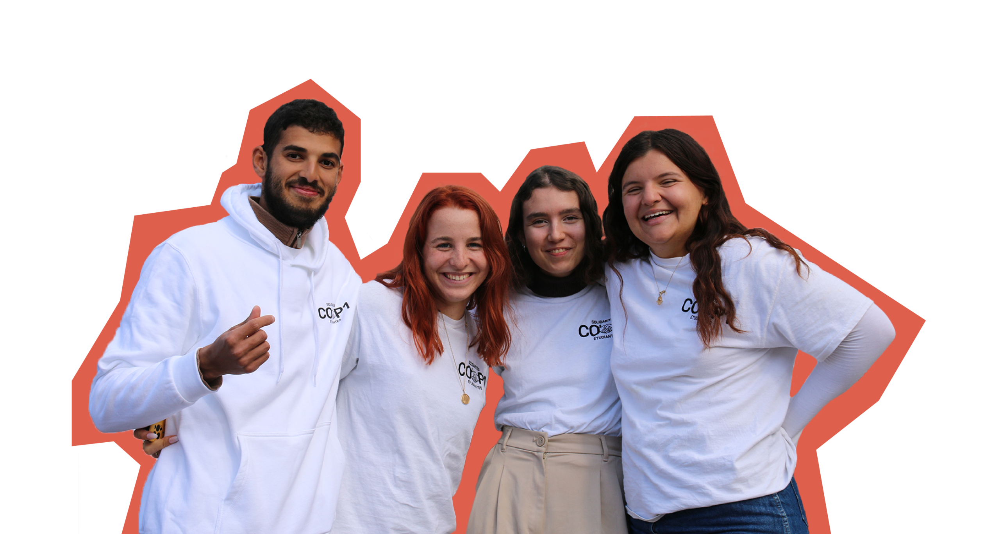

Cop1 est une association indépendante motivée par un but simple : porter assistance à tout étudiant dans le besoin grâce à des distributions gratuites de denrées alimentaires, de produits d’hygiène, de vêtements, un accès aux droits, à la culture, au sport, à l’emploi et de nombreuses activités !
Cliquez-moi
Accent coloré — exemple de mise en avant.